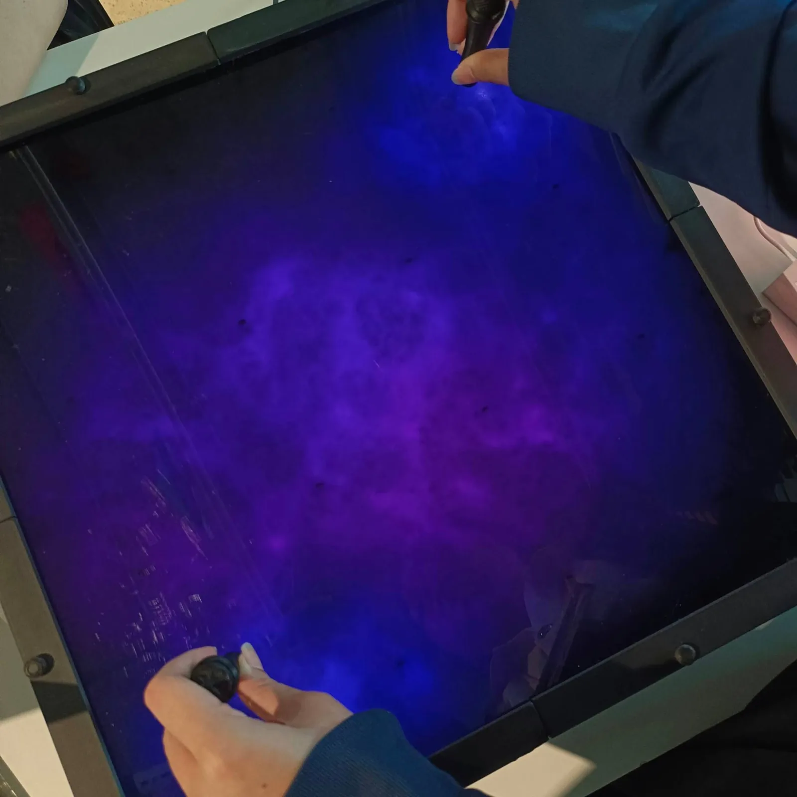
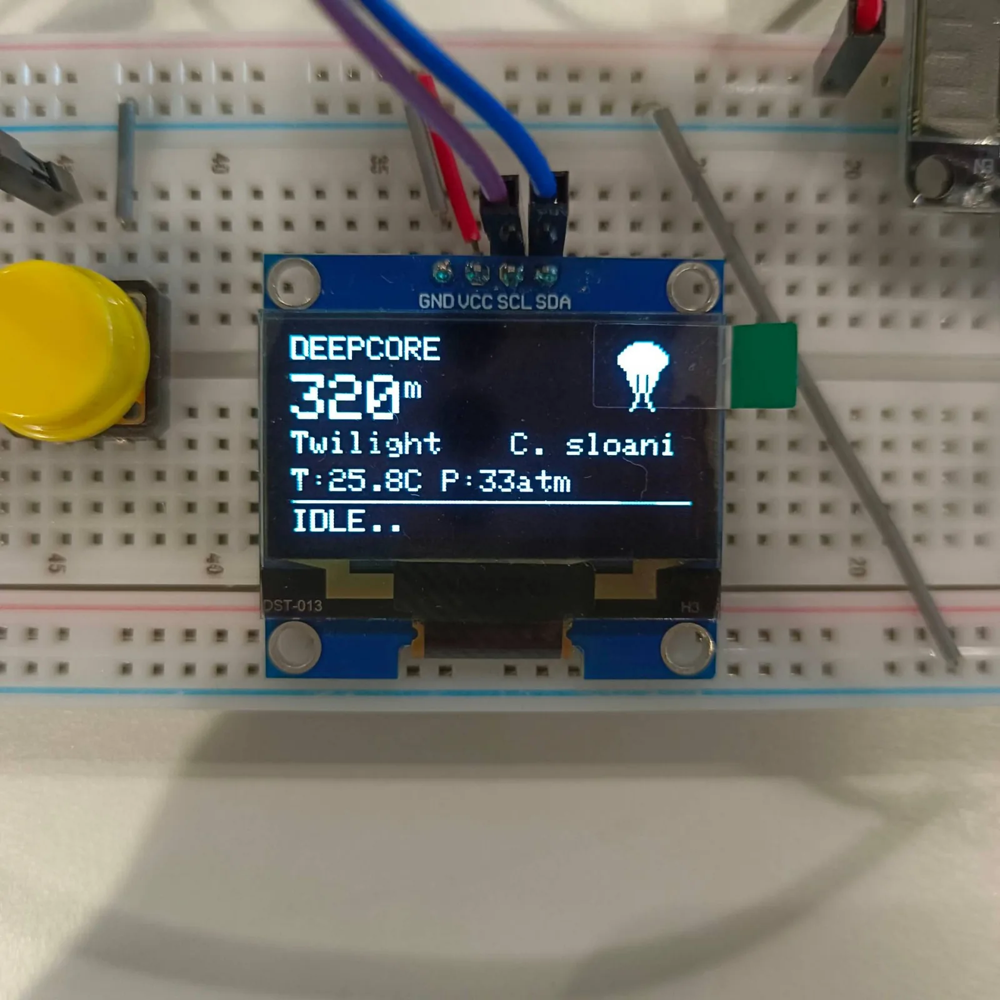
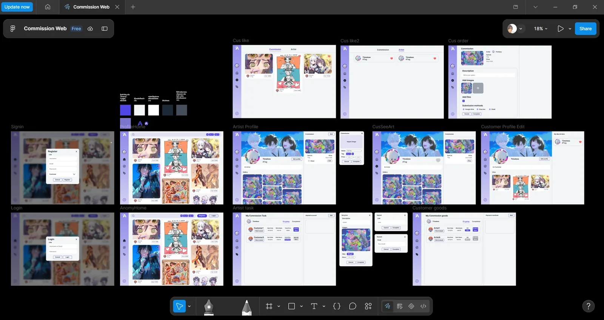
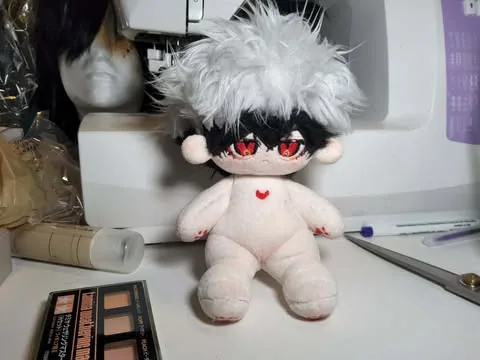
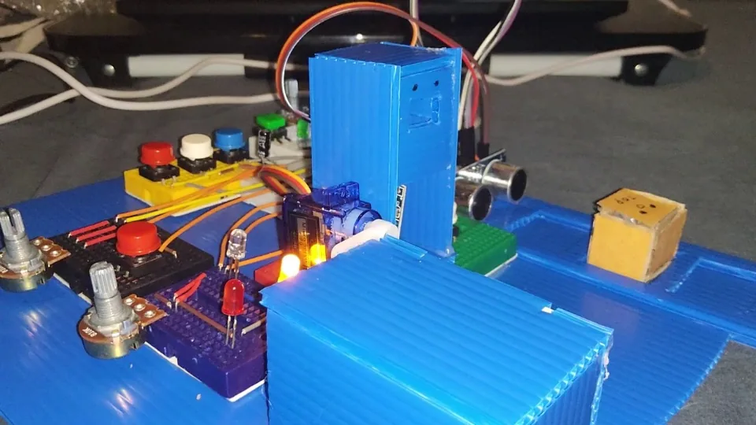
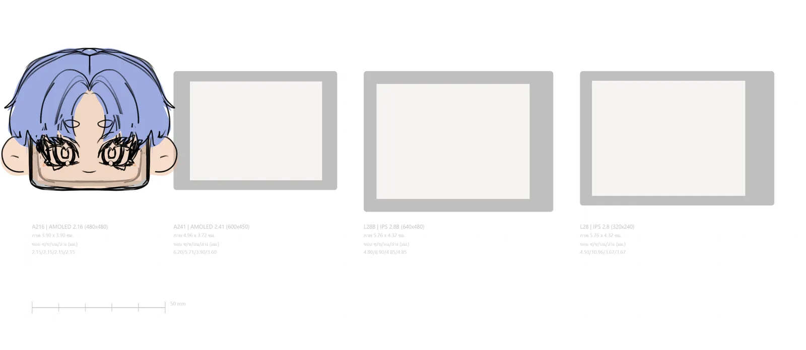
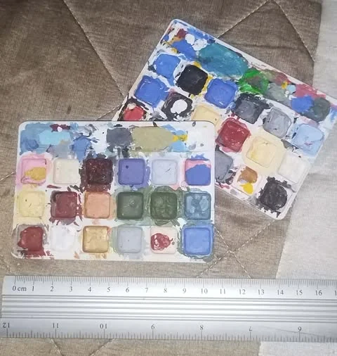
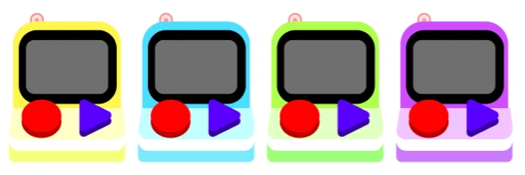

สายงาน 1 จาก 2
ผลิตภัณฑ์และต้นแบบ
ฉันเปลี่ยนไอเดียเป็นต้นแบบที่จับต้องได้ — คอนเซปต์ CAD พิมพ์ด้วยเครื่องพิมพ์ 3D ของตัวเอง เดินสายและบัดกรี — แล้วออกแบบใหม่ในส่วนที่ทดสอบแล้วไม่ผ่าน ฉันเขียนสเปก ให้ AI เขียนโค้ดส่วนใหญ่ แล้วตรวจผลเอง
โปรเจกต์หลัก

METO
หุ่นยนต์ตัวเล็กที่แสดงอารมณ์ได้ สร้างขึ้นเพื่อหาคำตอบว่าการแสดงอารมณ์ช่วยให้มือใหม่เรียนเขียนโปรแกรมแบบต่อบล็อกได้ดีขึ้นหรือไม่

Magnetic Universe
ผนังแสงขนาด 40 × 40 ซม. ที่แม่เหล็กแต่ละก้อนจะได้วงแสงของตัวเองที่ลอยอยู่ระหว่างเซนเซอร์

รางวัลที่ 1DeepCore → DeepSphere
เครื่องสำรวจทะเลลึกที่ใช้มือเล่น สร้างจากข้อมูลสัตว์ที่มีอยู่จริงเท่านั้น DeepCore ได้รางวัลที่ 1; DeepSphere กำลังทำ

เว็บไซต์คอมมิชชัน MOFYCH
เว็บของร้านฉัน: หน้าเว็บแนว “อาร์ต + เว็บ” ที่ฉันออกแบบ คิวที่คนติดตามได้ และระบบจับคู่สีเพ้นต์ให้ได้สีที่ตรง

Commission Booking Web
เว็บจองงานสองฝั่ง ที่พางานคอมมิชชันไปตั้งแต่สั่งจนถึงยืนยันรับงาน
งานชิ้นเล็ก

โคมไฟพิกเซล Minecraft
โคมไฟพิกเซลพิมพ์ 3D ที่ทอดเงาเป็นบล็อกแบบ Minecraft ควบคุมจากโทรศัพท์

svgtostl
เครื่องมือที่แปลงภาพวาดถมดำของฉันเป็นชิ้นงานพิมพ์ได้ ที่มุมแหลมและเส้นโค้งตรงตามภาพ

ตุ๊กตาผ้า
ตุ๊กตาสำหรับตัวละครออริจินัล: ชีตออกแบบของฉัน หน้าปัก หูแม่เหล็กถอดได้

Digital Puzzle Box
บอร์ดจริงที่เป็นตัวควบคุมกล่องปริศนาที่อยู่บนจอ — กุญแจดอกสุดท้ายเป็นของจริง

OC Companion
อุปกรณ์เล็ก ๆ หนึ่งชิ้นต่อตัวละครของลูกค้าหนึ่งตัว: จอ AMOLED คือใบหน้าทั้งหน้า

เครื่องพับถุงพลาสติก
เครื่องในแนวคิดที่พับถุงพลาสติกเป็นสามเหลี่ยมและแยกตามขนาด ออกแบบตามโจทย์ SDGs

จานสีหลุมเล็ก
จานสีพิมพ์ 3D ขนาดเล็ก มี 18 หลุมเล็กและลึกในถาดขนาด 109 × 75 มม. — จากปกติที่มีแค่ 5–10 หลุม

Mini Display To-Do List
แนวคิดอุปกรณ์ตั้งโต๊ะที่แสดงเฉพาะงานถัดไป มีปุ่ม Done ปุ่มดูความคืบหน้า และไฟเตือนกำหนดส่ง